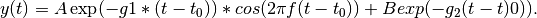

pypimm.fitutils¶
model-fitting utilities
Contains utilities to process raw time-domain FMR signals, and to fit them to a model for their behavior in time and as a function of applied bias field. The estimated parameters have a physical significance concerning the dynamic magnetic properties of the material that created them.
-
fitutils.bandlimit.bandlimit(signal, fs, bw)¶ Band-limits the given signal using a filter of the given order and frequency cutoffs.
The filter is a linear-phase Gaussian FIR filter with a Hamming window.
Parameters: - signal – signal to be filtered, numpy array-like
- fs – sampling frequency, float
- bwl – pass band lower limit, float
- blu – pass band upper limit, float
Returns: filtered signal, numpy array-like
-
fitutils.bandlimit.gaussian(fs, fc)¶ For a given sampling frequency and cutoff frequency, returns a tuple containing a gaussian filter six standard deviations in length. :param fs: :param fc: :return:
-
fitutils.bandlimit.hamming(n)¶ Returns a length-n Hamming window. :param n: :return:
-
fitutils.bandlimit.ideal_lpf(l, corner=1)¶ The “ideal” FIR low-pass filter is y(n) = wc / pi * sinc(wc * n), where wc is the cutoff frequency. This function returns the first l terms of this function centered about n=0 (i.e. from -l/2 to l/2). :param l: :param corner: :return:
-
fitutils.fit_data.dsinplus_sp(x, p0, p1, p2, p3, p4, p5)¶ Exactly the same as dsin, but with separate args because that’s what Scipy’s curve_fit takes. :param x: :param p: :return:
-
fitutils.fit_data.fit_data(analysis)¶ The univariate signal given by (timebase, signal) is fit to a damped sine of the form

t0 is found first, and is taken as the time of the first zero-crossing after a user-specified amount of data to skip. A is found next, by shifting the last value of the signal to zero and taking the magnitude of the first data point. The frequency and damping are a little trickier to find, and are covered in their respective functions.
Once estimates for the values are made this way, we refine the values by making a Lev-Mar best fit.
Parameters: - timebase – time axis of signal
- signal – voltage (y-values) of signal
- skip – optionally, initial data to skip.
Returns: dict containing amplitude, frequency, damping, and start time of the damped cosine that best fits the signal.
-
fitutils.characterize_fits.characterize_fits(analysis)¶ Parameters: fits – Returns:
-
fitutils.estimate_damping.estimate_damping(timebase, signal, fguess, name=None)¶ Parameters: - timebase –
- signal –
Returns:
-
fitutils.estimate_frequency.estimate_frequency(timebase, signal, resolution=0.01, name=None)¶ Parameters: - resolution –
- name –
- timebase –
- signal –
Returns:
-
fitutils.fit_data.dsinplus_sp(x, p0, p1, p2, p3, p4, p5) Exactly the same as dsin, but with separate args because that’s what Scipy’s curve_fit takes. :param x: :param p: :return:
-
fitutils.fit_data.fit_data(analysis) The univariate signal given by (timebase, signal) is fit to a damped sine of the form
t0 is found first, and is taken as the time of the first zero-crossing after a user-specified amount of data to skip. A is found next, by shifting the last value of the signal to zero and taking the magnitude of the first data point. The frequency and damping are a little trickier to find, and are covered in their respective functions.
Once estimates for the values are made this way, we refine the values by making a Lev-Mar best fit.
Parameters: - timebase – time axis of signal
- signal – voltage (y-values) of signal
- skip – optionally, initial data to skip.
Returns: dict containing amplitude, frequency, damping, and start time of the damped cosine that best fits the signal.
-
fitutils.fmin_simplex.fmin_simplex(fun, p0, spread=1, rtol=1e-10)¶ Finds a local minimum of :param fun: function that takes a list of length M floats as an argument
and returns a floatParameters: - p0 – list of length M
- spread – float
- rtol – float
:return:tuple of (float, [float, float])
-
fitutils.fmin_simplex.model_fit_mestimate(x, y, yfun, dist, p0, sigma=1, spread=1)¶ Computes a general M-estimate (maximum likelihood estimate) of a function yfun with parameters p to agiven set of data (x, y), whose y values have standard deviation sigma, in the presence of an arbitrary (normalized) error distribution
en(x) = exp(-dist(x)).
This is in contrast to a least-squares estimate, which assumes that the error is Gaussian (in other words, when mlfun = 0.5*x*x). This allows for a more robust fit of the model to the data: a Lorentzian, for example, will be more tolerant of outliers.
Parameters: - x –
- y –
- fun –
- mfun –
- p0 –
Returns:
-
fitutils.preprocess.localmax(y)¶ - Finds the index of the first local maximum in the signal y.
Parameters: y – Returns:
-
fitutils.preprocess.preprocess(timebase, signal, configs)¶ Parameters: - timebase –
- signal –
Returns:
-
fitutils.robust_fit.dsinplus_sp(x, p0, p1, p2, p3, p4, p5)¶ Exactly the same as dsin, but with separate args because that’s what Scipy’s curve_fit takes. :param x: :param p: :return:
-
fitutils.robust_fit.ndnormal(mus, sigmas)¶ Creates a list of normally distributed random numbers, with each item having its own mean and standard deviation. :param n: Int :param mus: list of Floats :param sigmas: list of Floats :return:
-
fitutils.robust_fit.robust_fit(x, y, fun, p0, spread, dist=None, sigma=1, maxiter=1000)¶ Fits data to a model using robust initial guess and parameter estimation tecnhiques.
Initial guess refinement is done with shotgun least-squares, and model fitting is done via maximum-likelihood estimates powered by Nelder-Mead cumulative error minimization.
Parameters: - x –
- y –
- fun –
- p0 –
- spread –
- dist –
- sigma –
- maxiter –
Returns:
-
fitutils.shotgun_lsq.ndnormal(mus, sigmas)¶ Creates a list of normally distributed random numbers, with each item having its own mean and standard deviation. :param n: Int :param mus: list of Floats :param sigmas: list of Floats :return:
-
fitutils.error_analysis.error_analysis(timebase, signal, fit, name)¶ This function is used to take a look at the deviation between PyPIMM’s best fit for the signal and the signal itself. It does the following:
-compute the histogram and spectrum of the fit error signal (data - fit) -attempt to fit the histogram to three error distributions (Gaussian
single-sided exponential, Lorentzian)-Attempts to fit the noise spectrum to several noise power spectral densities
Parameters: - timebase –
- signal –
- analysis –
Returns:
Functions
bandlimit |
|
characterize_fits |
|
error_analysis(timebase, signal, fit, name) |
This function is used to take a look at the deviation between PyPIMM’s best fit for the signal and the signal itself. |
estimate_damping |
|
estimate_frequency |
|
fit_data |
|
fmin_simplex |
|
preprocess |
|
robust_fit |
|
shotgun_lsq |